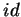

=2 TESE SUBMETIDA AO CORPO DOCENTE DA COORDENAÇÃO DOS PROGRAMAS DE PÓS-GRADUAÇÃO DE ENGENHARIA DA UNIVERSIDADE FEDERAL DO RIO DE JANEIRO COMO PARTE DOS REQUISITOS NECESSÁRIOS PARA A OBTENÇÃO DO GRAU DE MESTRE EM CIÊNCIAS EM ENGENHARIA DE SISTEMAS E COMPUTAÇÃO.
Aprovada por:
TREVISAN, THOBIAS SALAZAR Um Mecanismo Modular e Eficiente para Compartilhamento de Memória em Clusters [Rio de Janeiro] 2003
X, 42 p. 29,7 cm (COPPE/UFRJ, M.Sc.,
Tese - Universidade Federal do Rio de 1 - Computação de Alto Desempenho 2 - Sistemas Operacionais 3 - Memória Compartilhada Distribuída I. COPPE/UFRJ II. Título (série)
|
=1
``If you have an apple and I have an apple and we exchange apples then you
and I will still each have one apple. But if you have an idea and I have
one idea and we exchange these ideas, then each of us will have two
ideas.''
Agradecimentos
Gostaria inicialmente de agradecer à minha família pelo apoio e incentivo dado durante todo o curso. Obrigado aos meus pais, Hamilton e Aparecida, e aos meus irmãos Germano, Lucas e Jerusa, os quais formam a verdadeira base da minha vida.
Agradeço ao meu orientador prof. Claudio Amorim pelo incentivo e pela infraestrutura proporcionada para a realização desta tese. Ao meu outro orientador prof. Vítor Santos Costa pelo apoio e ajuda no estudo do kernel do Linux.
Aos meus colegas da UCPel Leonardo e Rodrigo (drigator) por terem encarado esta ``viagem'' de vir estudar na UFRJ.
Ao Lauro, amigo que fiz durante o período que estive no LCP. Laurinho, não vou esquecer das nossas ``intermináveis'' conversas e discussões sobre os mais variados temas.
E por último, a um grande amigo e sócio :-) que fiz durante o mestrado. Valeu Silvano, nunca esquecerei os momentos de diversão no LCP jogando em rede DOOM, Wolfenstein e Enemy Territory. Treina que um dia você me ganha &:)
Resumo da Tese apresentada à COPPE/UFRJ como parte dos requisitos necessários para a obtenção do grau de Mestre em Ciências (M.Sc.)
Orientadores: Claudio Luis de Amorim
Vítor Santos Costa
Programa: Engenharia de Sistemas e Computação
Nesta tese propomos o sistema MOMEMTO (MOre MEMory Than Others), um novo conjunto de mecanismos em kernel para suportar o compartilhamento global das memórias distribuídas dos nós do cluster, permitindo à aplicação utilizar mais memória do que a disponível em qualquer nó. MOMEMTO oferece primitivas básicas de sincronização, o que permite ao programador um maior controle sobre o uso da memória e abre espaço para otimizações feitas especificamente para cada aplicação. Além disso, com estas primitivas pode-se decidir quando e quais páginas de memória compartilhada precisam ser sincronizadas. O sistema MOMEMTO foi implementado no kernel 2.4 do Linux e comparamos seu desempenho com implementações em TreadMarks e MPI de alguns benchmarks. Nos experimentos o sistema apresentou um baixo overhead e melhorou substancialmente o tempo de execução das aplicações. Ainda mais importante que os resultados obtidos nos experimentos é o fato de que MOMEMTO se mostra como uma alternativa promissora para o compartilhamento de memória global em clusters e abre espaço para novas pesquisas nesta área, visando soluções específicas para classes de aplicações.
Abstract of Thesis presented to COPPE/UFRJ as a partial fulfillment of the requirements for the degree of Master of Science (M.Sc.)
Advisors: Claudio Luis de Amorim
Vítor Santos Costa
Department: Computing and Systems Engineering
In this thesis, we propose the MOMEMTO (MOre MEMory Than Others) system, a new set of kernel mechanisms to support global memory sharing across the physically distributed memories of cluster's nodes. A main advantage of MOMEMTO is that it allows cluster's applications to use more memory space than that is available in any single node. MOMEMTO also offers basic synchronization primitives, which allow programmer to have more control over the use of the global memory and to create opportunities for application-specific optimizations. In addition, programmers can use the synchronization primitives we propose to decide when and which shared memory's pages need to be synchronized. We implemented the MOMEMTO system in the Linux's Kernel 2.4 and compared MOMEMTO's performance against that of TreadMarks and MPI implementations of some benchmarks. Overall, our results show that MOMEMTO has low overhead and that it improves significantly the execution time of the benchmarks. Most importantly, our experimental results reveal that MOMEMTO is an promising alternative to support global memory sharing in clusters and that it opens new research avenues on exploiting MOMEMTO for application-specific solutions.
Embora clusters ofereçam escalabilidade em relação ao número de CPUs, bem como espaço de memória, eles podem ser limitados pela capacidade de comunicação nó-para-nó. Deste modo, escrever aplicações paralelas eficientes que escalem pode ser uma tarefa difícil. Nós argumentamos que uma das principais dificuldades para se escrever tais aplicações é a dependência em Sistemas Operacionais (SO) tradicionais off-the-shelf, ou seja, disponível em qualquer loja de informática. Tradicionalmente, cada nó no cluster roda sua própria cópia do sistema operacional e alguns utilitários de comunicação de dados e compartilhamento de recursos sobre um SO de propósito geral. Em outras palavras, os SOs continuam a tratar clusters como uma coleção de computadores conectados, onde cada um trabalha de forma independente. Infelizmente, sistemas operacionais tradicionais foram projetados para um ambiente computacional diferente e não suportam todas as funcionalidades necessárias para extrair todas as vantagens que clusters oferecem. Pesquisadores muitas vezes trabalham em volta deste problema no nível da aplicação. TreadMarks [7], por exemplo, implementa um ambiente de memória compartilhada em clusters. Escrevendo drivers de comunicação que rodam nas interfaces de rede, como M-VIA [1], eliminam alguns overheads de comunicação mas não integram a aplicação ao SO.
Estas soluções não são suficientes para obter o máximo desempenho de um cluster, visto que elas não preenchem o espaço entre o objetivo original dos SOs, que foram projetados para computadores pessoais e servidores, e questões específicas de desempenho que surgiram com os clusters.
Nosso trabalho concentra-se no problema de fornecer uma abstração de memória compartilhada, procurando alcançar um melhor desempenho para a aplicação. Primeiro, nós observamos que várias aplicações paralelas, de NAS-benchmarks [9] a sistemas de bancos de dados [14], freqüentemente precisam não só de escalabilidade de processadores, mas também de escalabilidade de memória. Por exemplo, assuma um cluster com 16 máquinas, onde cada uma tem 512 MB de memória RAM, rodando um NAS-benchmark CLASS-A (aplicações que utilizam muita memória) ou um banco de dados com uma grande quantidade de dados que requeira 8GB de memória. Infelizmente, vários sistemas software DSM (Distributed Shared Memory) atuais [29,7,40,39,23,19] ficam limitados ao tamanho da memória local de cada nó e, assim, não podem explorar todas as vantagens das memórias agregadas dos nós para compartilhamento. Nós argumentamos que uma solução eficiente para este problema requer adaptar o gerenciamento de memória virtual do SO para o cluster.
Nossa segunda observação é que sistemas DSM provêem mecanismos de coerência sofisticados e poderosos para assegurar consistência de memória, e a implementação destes sistemas pode ser complexa e introduzir overheads substanciais. Entretanto, muitas aplicações requerem formas mais simples para garantir consistência de memória e podem obter melhor desempenho se usarem um mecanismo mais apropriado. Cada aplicação tem suas próprias características, comportamento, padrões de acesso, sendo que, estas informações podem levar o sistema operacional a um melhor gerenciamento de sua memória e ao compartilhamento mais eficiente dos dados entre os nós para cada aplicação.
Em casos particulares pode valer a pena o esforço de implementar mecanismos específicos para suportar aplicações populares, tais como bancos de dados, simulações e aplicações científicas.
Nesta tese nós propomos a inclusão do seguinte conjunto de abstrações no kernel para o gerenciamento de memória global em clusters:
Nosso trabalho também é inspirado por pesquisas anteriores em sistemas operacionais. Como em nano-kernels [20], nós argumentamos que os usuários devem ter a opção de como conseguir máximo desempenho, e isto pode ser alcançado oferecendo diferentes interfaces para o SO, ou seja, tornando-o mais adaptável à aplicação. O sucesso de sistemas operacionais open-source, como Linux e os BSDs, proporcionaram acesso a imensa documentação e a clarificação das interfaces do SO, contribuindo para que internals do kernel se tornassem disponíveis e compartilhadas livremente. Assim, muitos usuários se acostumaram a aplicar patches e a reconfigurar o kernel para as necessidades do seu sistema.
Nesta tese apresentamos o sistema MOMEMTO (MOre MEMory Than Others), o qual estende o kernel do Linux 2.4 incluindo um conjunto de mecanismos que suportam memória compartilhada global. No nível mais baixo, o sistema altera o mecanismo de memória virtual (Virtual Memory - VM) do Linux e o mecanismo de rede, estendendo-os para proverem um mecanismo básico de memória compartilhada com granulosidade de uma página. Acima desta camada, provemos um conjunto de módulos que utilizam estes mecanismos para oferecerem um conjunto de abstrações ao usuário. Resultados preliminares demonstram que o sistema MOMEMTO alcança um bom desempenho quando comparado tanto a TreadMarks[7] como a MPI [5]. Em particular, MOMEMTO pode executar aplicações que requerem mais memória que TreadMarks pode oferecer.
As principais contribuições da tese são:
Atualmente, os principais paradigmas para a programação em cluster são baseados em passagem de mensagens, utilizando protocolos como PVM[22] ou MPI[5], e em sistemas DSM (Distributed Shared Memory), implementados tanto em hardware como em software.
No paradigma baseado em passagem de mensagens, o sistema de memória distribuída é totalmente exposto ao programador e, assim, toda a comunicação entre processos é realizada explicitamente pelo mesmo. O programador precisa saber onde estão os dados, decidir quais e para quem eles precisam ser enviados, tornando a programação uma tarefa complexa, especialmente para aplicações com estrutura de dados complexa.
Por sua vez, no paradigma baseado em memória compartilhada distribuída (Distributed Shared Memory - DSM) é criada uma abstração de memória compartilhada, fornecendo um espaço de endereçamento compartilhado. Uma das principais vantagens deste modelo está em esconder do programador a arquitetura de memória distribuída e prover uma extensão natural do modelo de programação seqüencial. A Figura 2.1 apresenta a estrutura geral de um sistema DSM, onde o software ou hardware DSM fornece a ilusão de um espaço de endereçamento único, alterando o comportamento das memórias que estão fisicamente distribuídas.
Utilizando DSM, uma aplicação pode ser escrita como se estivesse executando em um multiprocessador de memória compartilhada, acessando os dados compartilhados com operações normais de leitura e escrita. A tarefa de passagem de mensagens é escondida do programador.
Comparando sistemas de hardware e software DSM, a altíssima relação custo/benefício impede que os sistemas hardware DSM sejam acessíveis à maioria dos usuários. Em contra partida, os sistemas de software DSM como Treadmarks [7], HLRC[40], Orca[10], CASHMERE[19], ADSM [31], JIAJIA [23], entre outros, têm sido amplamente estudados e utilizados devido à sua facilidade de implementação e ao seu baixo custo.
Para a manutenção da coerência dos dados é necessário que as escritas a posições da memória compartilhada feitas por um processador sejam propagadas para os demais processadores do sistema. Esta propagação de escritas pode ser feita por protocolos de invalidação ou de atualização. No protocolo de invalidação, uma modificação em um dado compartilhado feita localmente é vista em um processador remoto através de uma mensagem de invalidação. Ao receber a mensagem, o processador remoto invalida o dado modificado, de maneira que um acesso subseqüente a este dado gera uma falha de acesso, para somente então a versão atual do dado ser buscada. No protocolo de atualização os dados não são invalidados, uma vez que a mensagem que informa que um dado foi modificado já carrega a sua nova versão, de maneira que, em um próximo acesso a este dado, não ocorrerá uma falha de acesso.
O protocolo de atualização diminui o número de falhas de acesso na memória local mas, por outro lado, ele induz um número maior de mensagens que o encontrado no protocolo de invalidação, já que muitas vezes a atualização não é vista antes que outras atualizações sejam feitas [13].
Os sistemas software DSM sofrem de um alto tráfego de comunicação e de overheads induzidos pelo protocolo de coerência que limitam seu desempenho [24]. Várias alternativas foram criadas para diminuir esse tráfego como, por exemplo, empregar modelos de consistência relaxados [27,11,15,25]. Um modelo de consistência de memória especifica quando operações de coerência de dados devem tornar-se visíveis para os outros processadores, ou seja, quando as modificações feitas em dados compartilhados devem ser observadas pelos processadores. Software DSM baseados nestes modelos podem reduzir os overheads atrasando e/ou restringindo a comunicação e as transações de coerência o máximo possível. Softwares DSM baseados em consistência relaxada e que permitem "múltiplos-escritores" tentam reduzir a comunicação e os custos de coerência ainda mais, permitindo que dois ou mais processadores modifiquem concorrentemente suas cópias locais de dados compartilhados e combinem o resultado destas modificações nas operações de sincronização[27,7]. Esta técnica diminui o efeito negativo do falso compartilhamento em sistemas cuja unidade de coerência é grande, como os softwares DSM que utilizam a página de memória virtual como unidade de coerência. O falso compartilhamento ocorre quando múltiplos escritores acessam dados não relacionados que estão localizados na mesma página e pelo menos um acesso é uma escrita ao dado. TreadMarks [7] e HLRC [40] são exemplos de sistemas que garantem a consistência de forma relaxada, utilizando o modelo Lazy Release Consistency (LRC) [27], e que permitem a existência de múltiplos escritores. O protocolo LRC atrasa a propagação de mensagens de coerência até pontos de sincronização como lock ou barreiras.
Um exemplo de software DSM que utiliza a técnica de múltiplos escritores é o TreadMarks. Neste sistema, uma página é inicialmente protegida contra escrita, de forma que na primeira escrita a ela é gerada uma violação de acesso. Durante o tratamento desta violação é feita uma cópia exata da página (um twin) e a escrita à cópia original da página é liberada. Quando a coleta das modificações é necessária, o twin e a versão corrente da página são comparadas para criar uma codificação das modificações (um diff). A utilização de twins e diffs em TreadMarks permite aos processadores modificarem simultaneamente suas cópias locais de páginas compartilhadas.
Desta forma, quando ocorre uma falha de acesso, o processador consulta sua lista de notificações de escrita para descobrir quais os diffs necessários para atualizar a página. O processador então solicita os diffs correspondentes e espera que eles sejam criados, enviados e recebidos. Depois de recebidos todos os diffs requisitados, o processador que sofreu a falha os aplica à sua cópia desatualizada. Uma descrição mais detalhada de TreadMarks pode ser encontrada em [7].
A maioria dos protocolos que permitem múltiplos escritores utilizam o mecanismo de twinning e diffing. Esses protocolos conseguem diminuir o efeito do falso compartilhamento, permitindo que vários processadores alterem concorrentemente uma página compartilhada. Porém, o suporte a múltiplos escritores cria custos adicionais no caso de páginas que não estão sujeitas ao falso compartilhamento, pois é necessário detectar, armazenar e aplicar modificações a essas páginas. Estes custos adicionais podem ser eliminados no caso de páginas que não sofrem falso compartilhamento, limitando as alterações a apenas um processador por vez. Assim, foi proposta a utilização de técnicas de adaptação entre protocolos único escritor e múltiplos escritores. Uma descrição detalhada desta técnica pode ser encontrada em Adaptive TreadMarks (ATmk) [8], ADSM [31,32] e HAP[39].
Várias outras técnicas foram pesquisadas para aumentar o desempenho de softwares DSM. Dentre estas pode-se destacar: pré-busca [12,26,33] e adaptação entre protocolos único escritor e múltiplos escritores [8,31,32].
Na técnica de prefetching (pré-busca) o dado remoto é buscado com antecedência, isto é, antes de ser efetivamente necessário, tentando diminuir a latência de acesso a dados remotos de softwares DSM em tempo de execução. A utilização desta técnica de forma efetiva em softwares DSM é difícil devido a duas razões principais:
As principais fontes de atraso em softwares DSM estão relacionadas à latência de comunicação e às ações de coerência [34]. Latência de comunicação causa atrasos no processamento, degradando o desempenho do sistema. As ações de coerência também podem afetar negativamente o desempenho do sistema. Como o modelo de consistência de memória é a interface entre o programador e o sistema, ele especifica como a memória irá aparecer para o programador. Isto influencia na complexidade de programação e no desempenho. Um modelo de consistência de memória rígido torna a programação mais fácil, em contra-partida deixa menos oportunidades para otimizações. Além disso, diferentes tipos de aplicações requerem diferentes tipos de modelos de consistência, visto que a escolha do modelo influenciará no desempenho da aplicação.
Como vimos, existem várias técnicas para melhorar o desempenho de sistemas software DSM, por exemplo, protocolo de invalidação ou atualização, técnicas de múltiplos escritores, técnica de pré-busca, entre outros. Entretanto, estas opções não alcançam bom desempenho para todas as aplicações. Por exemplo, quando utilizado em aplicações com único escritor (single-writer), o suporte a múltiplos escritores pode degradar o desempenho do sistema, pois os mecanismos de twin e diff geram overhead e complexidade que não serão úteis para a aplicação. O problema é que os custos de desempenho desses sistemas otimizados ainda são muito altos e não conseguem melhorar o desempenho para todas as aplicações.
No Linux, todas as informações relacionadas com o espaço de endereçamento do processo estão incluídas na estrutura referenciada pelo campo no descritor do processo (struct task_struct). O campo é um ponteiro para uma estrutura do tipo . Cada processo tem uma .
O Linux implementa a área virtual de memória (VMA) através da estrutura . Uma VMA é um intervalo contíguo de endereço linear, ou seja, uma região homogênea de memória virtual de um processo. Cada processo tem uma lista de VMAs, como ilustra a Figura 3.1. Exemplos de VMAs são:
Todas as VMAs de um processo são ligadas através de uma árvore. O kernel encontra uma área de memória através do campo da . Quando o kernel tem um endereço e quer encontrar a qual VMA este endereço pertence, ele usa a função , que pode ser encontrada em mm/mmap.c. As regiões de memória de cada processo podem ser acessadas no arquivo /proc/pid/maps onde é o  do processo. Alguns campos da são:
A estrutura manipula eventos específicos sobre uma VMA. Um dos campos desta estrutura é o . Quando um processo tenta acessar uma página que não está na memória e pertence à uma VMA válida, ou seja, tem um endereço válido, esta função é chamada, se estiver definida, para esta VMA. Se a função não estiver definida para esta área o kernel aloca uma nova página. É importante salientar que um endereço pode ser coberto por uma VMA mesmo se o kernel ainda não tenha alocado uma página para armazená-lo. O kernel do Linux realiza paginação sob demanda, ou seja, uma página só será alocada quando o processo acessá-la. Informações detalhadas sobre o kernel e o sistema de memória virtual do Linux podem ser encontradas em [16,6].
MOMEMTO cria e gerencia uma VMA do processo, deixando as demais serem gerenciadas pelo sistema operacional. Um processo usa o sistema da mesma maneira como se estivesse utilizando um mmap() para memória anônima. Mais precisamente, o usuário requisita um novo intervalo de endereços, MOMEMTO cria um novo intervalo de memória e o insere na lista de VMAs do processo. Na prática, o processo utilizará esta memória do mesmo modo como se ele tivesse feito uma chamada às funções mmap() ou malloc().
A memória de MOMEMTO é alocada sob demanda. Em uma falha de página, o kernel chama a função nopage para realizar o tratamento adequado. Quando a falha de página ocorre em um endereço que pertence à VMA gerenciada por MOMEMTO, é realizado um tratamento específico para esta página. Este processo será descrito na seção 3.4.2.
A Figura 3.2 demonstra como MOMEMTO interage com uma aplicação. Cada processo tem vários segmentos de memória virtual em seu espaço de endereçamento. Os segmentos normais do Linux são locais a cada nó. Em contraste, os segmentos de MOMEMTO são compartilhados entre os nós do cluster. Do ponto de vista da aplicação, o espaço compartilhado é visto com um único bloco contíguo de memória. Do ponto de vista do sistema, os segmentos compartilhados de cada nó são agregados para formar um grande segmento compartilhado, onde cada nó pode ter mapeado em memória algumas páginas do segmento compartilhado, mas não necessariamente todas.
No nível mais baixo, MOMEMTO somente compartilha páginas entre os nós. Para agregar a memória dos nós, utilizamos protocolo baseado em residência (home), onde cada nó é responsável por uma fração do número total de páginas, como ilustra a Figura 3.3. Inicialmente, cada nó tem em memória somente as páginas das quais ele é a residência. Para as demais, uma página física só será alocada quando o nó acessá-la. Quando este acesso ocorrer, o sistema buscará uma cópia desta página na sua residência.
A estratégia utilizada atualmente para decidir qual nó será a residência de uma página é a seguinte: as páginas são divididas estaticamente entre os nós e cada nó aloca as páginas que lhe pertencem na inicialização, gerando uma falha de página para cada uma.
MOMEMTO oferece primitivas básicas para o compartilhamento de dados entre os nós do cluster, ou seja, não garante consistência. O sistema não é responsável por sincronização e tampouco por atualização. Ao contrário, esta é uma tarefa para camadas mais altas e possivelmente para a aplicação. A maioria dos protocolos DSM realizam atualização de páginas em pontos de sincronização, mas a melhor política de atualização varia entre aplicações. Freqüentemente a aplicação conhece quais processadores têm cópia de uma página e pode facilmente descobrir quais páginas precisam ser atualizadas. Entretanto, mecanismos genéricos de mais alto nível podem ser implementados através de módulos de kernel ou bibliotecas para aplicações. O MOMEMTO procura, portanto, manter-se como uma ferramenta básica que pode ser utilizada por várias aplicações e permite ao programador um maior controle sobre o gerenciamento da memória compartilhada e é um mecanismo sobre o qual serviços deverão ser implementados, tais como DSM, MPI, cache para banco de dados, etc.
mmto_mmap, mmto_load e mmto_sync.
A mmto_mmap faz o mapeamento de uma área de memória virtual que irá ser compartilhada entre os nós. Esta chamada de sistema, similar a função mmap, recebe como parâmetros um número indicando em bytes a quantidade de memória a ser alocada e uma flag que especifica como as residências serão distribuídas. Com esta flag pode-se implementar diferentes algoritmos para a distribuição das residências. Atualmente, o valor suportado pelo sistema para esta flag é SEQUENTIAL, descrito na próxima seção.
Por sua vez, a chamada de sistema mmto_load recebe como parâmetro um arquivo texto com os nós que irão compartilhar memória. Todos os nós devem executar esta chamada de sistema para iniciar o sistema. Usando um arquivo para especificar os nós, podemos reaproveitar arquivos gerados e utilizados por outros sistemas. Por exemplo, MOMEMTO pode ler arquivos gerados por escalonadores de tarefas como PBS[38] e SGE[35], e assim saber quais nós foram alocados para executar a aplicação.
A mmto_sync provê um mecanismo para a sincronização. Ela recebe como argumento o endereço de uma página virtual compartilhada e uma flag que determina qual ação deve ser tomada sobre esta página. Atualmente existem duas opções para esta flag:
Nesta seção serão descritos os detalhes técnicos de todas as chamadas de sistemas adicionadas ao sistema operacional por MOMEMTO.
Esta chamada de sistema é utilizada para alocar um intervalo de endereços de memória virtual. As principais tarefas são:
Há algumas vantagens na utilização de threads de kernel por MOMEMTO, por exemplo, a troca de contexto (context switch) entre threads de kernel são mais leves do que entre processos comuns, porque elas rodam somente em modo kernel. Outra vantagem é que as utilizando o nosso sistema realiza menos trocas de contextos. Por exemplo, quando um processo recebe uma atualização de página, a thread de kernel que está conectada com o nó que enviou a atualização é acordada, faz a cópia direta para a página do usuário e voltar a dormir. Todo o processo ocorre sem a necessidade de troca de contexto.
Os nós se comunicam utilizando sockets TCP. Para diminuir o overhead do TCP/IP, uma conexão é estabelecida entre os nós na inicialização, ou seja, cada nó abre uma conexão com uma thread de kernel dos nós remotos e assim todos permanecem conectados entre si. O protocolo implementado por MOMEMTO é basicamente composto de mensagens de pedido e resposta que são enviadas sobre a rede TCP/IP. Estas mensagens são utilizadas para pedir ou atualizar uma página remota. Para cada atualização realizada pela aplicação apenas 4 bytes são adicionados pelo sistema, que são utilizados para informar qual página receberá os dados atualizados. O resto dos bytes trafegados são dados úteis da aplicação e é gerada apenas uma mensagem para esta operação. Por sua vez, na falha de página são utilizadas duas mensagens: uma com 4 bytes para especificar a página requisitada e outra para receber os dados referentes à ela.
Como todas as VMAs têm o mesmo tamanho, mas podem ter sido alocadas com endereços virtuais diferentes, os nós se comunicam utilizando o deslocamento (offset) dentro da VMA em vez do endereço virtual da página.
O sistema utiliza três principais estruturas de dados que são alocadas como vetores contíguos:
Deste modo, os gastos de memória em MOMEMTO são:
MOMEMTO não modifica a estrutura VMA do kernel. As estruturas de dados requeridas por MOMEMTO são alocadas quando a aplicação começa a executar e liberadas quando a aplicação termina e além disto, são locais ao módulo. Assim, MOMEMTO não adiciona nenhum overhead na execução de aplicações que não o utilizam e nem para a execução do kernel.
Com os experimentos realizados, espera-se avaliar o impacto do protótipo do MOMEMTO. Entretanto, salientamos que uma comparação direta de outros sistemas com MOMEMTO é difícil, visto que o sistema utiliza o paradigma de memória compartilhada mas, ao mesmo tempo, não garante consistência de memória. Para tentar realizar uma comparação substancial desta tese, comparamos MOMEMTO com um software tradicional do paradigma de memória compartilhada (TreadMarks) e um software do paradigma de troca de mensagens (MPI).
A computação do vetor , ilustrada na Figura 4.2, é dividida igualmente entre três nós, onde cada um calcula uma terça parte do vetor resultante.
A Figura 4.3 mostra o tempo total no teste MV Pequeno para MOMEMTO e TreadMarks (TMK) [7]. Ambos sistemas utilizam o mesmo algoritmo para realizar a multiplicação de vetores. Como pode-se observar, há uma melhora no tempo de execução da aplicação de 48% para MOMEMTO quando comparado à versão em TMK. Esta melhora está diretamente relacionada com o número de falhas de página, chamadas de sistema e latência de interrupção em ambos sistemas. Como o mecanismo de memória compartilhada oferecido por MOMEMTO é implementado dentro do kernel, o número de trocas de contexto e a latência no recebimento de interrupções é menor quando comparado a TreadMarks. Nós acreditamos que este ganho deve permanecer significativo mesmo quando MOMEMTO implementar um protocolo de consistência relaxada como o usado em TreadMarks.
Falhas de páginas em MOMEMTO ocorrem sob demanda, ou seja, somente quando um nó acessar uma página do vetor que ele não seja a residência é que vai ocorrer a busca da página. Após o nó calcular todos os elementos desta página irá ocorrer a atualização da mesma. Deste modo, dentro do tempo de processamento, que foi de 9,96s, está o tempo gasto em falhas de páginas, atualizações e duas barreiras, as quais foram utilizadas para sincronizar a execução após os nós inicalizarem os seus vetores e após o cálculo do vetor resultante. Estes tempos são mostrados na Tabela 4.1. O tempo gasto no cálculo do vetor foi de 0,55s.
O campo Média representa o tempo médio para cada operação. No total foram realizadas 4.000 atualizações de páginas (uma terça parte do vetor ) pelo nó que realizou o cálculo. O nó 3, que é a residência do vetor , não realizou atualização de página. O número total de falhas de páginas por nó foi de 8.000, ou seja, como cada nó realiza o cálculo de uma terça parte do vetor resultante, todos os nós tomaram falhas de páginas de uma terça parte dos dois vetores que eles não são a residência. A diferença entre o tempo e o de foi o tempo gasto executando o código de MOMEMTO. Assim, o tempo para atualização foi de 1% e para falha de página de 1,47% do tempo . Estes tempos mostram que o overhead que MOMEMTO impõe é mínimo quando comparado à latência da rede, a qual pode ser melhorada utilizando outras tecnologias de comunicação como Myrinet ou Giganet.
O tempo gasto na barreira foi um pouco elevado devido ao fato de cada nó quando chega em cada barreira abrir uma conexão TCP com o gerente. Pode-se melhorar este tempo utilizando técnicas mais sofisticadas como discutido em outros trabalhos [17].
Este primeiro experimento reforça nosso argumento de que o desempenho da aplicação pode ser melhorado significantemente através de protocolos mais específicos para manter a coerência de memória.
Em nosso segundo teste com multiplicação de vetores, nós estudamos se MOMEMTO poderia realmente trabalhar com uma grande quantidade de memória. O experimento requer 825 MB de memória compartilhada. TreadMarks não conseguiu executar com esta carga em nosso ambiente de teste e, por esta razão, apresentamos os resultados somente para MOMEMTO na Tabela 4.2.
O tempo total de execução para MOMEMTO foi de 63,2s para esta carga. Como no teste anterior, o tempo total de processamento inclui o tempo para atualizações, falhas de páginas e duas barreiras. Estes tempos são mostrados na Tabela 4.3. O tempo gasto realmente no cálculo do vetor foi de 5,35s e o restante (55,12s) foram custos da paralelização.
Cada nó realizou 23.466 falhas de página (um terço do vetor ). Cada nó gerou 46.932 falhas de páginas, correspondente aos dois vetores para o qual o nó não era a residência. O tempo médio gasto em MOMEMTO foi s para atualização e s para falha de página.
Nestes experimentos preliminares, o protocolo simples de consistência utilizado por MOMEMTO permite à aplicação decidir sobre a política e o protoloco utilizado na atualização. Esta característica pode ter contribuído para o melhor desempenho do sistema quando comparado com TreadMarks.
Com o intuito de avaliar o mecanismo em kernel oferecido por MOMEMTO, comparamos a mesma aplicação com uma implementação utilizando o paradigma de troca de mensagens. As Figuras 4.4 e 4.5 mostram o tempo de execução para a multiplicação de vetores com MOMEMTO e a mesma aplicação implementada em MPI[5].
Como no teste anterior, em ambos sistemas cada nó calcula uma terça parte do vetor , cada nó é a residência de um vetor e o inicializa na execução. Na versão em MPI, mensagens são utilizadas para distribuir as partes utilizadas por outros nós do vetor e , ou seja, o nó 0 envia uma terça parte do seu vetor para o nó 1 e uma outra terça parte para o nó 2. O mesmo processo ocorre no nó 1 sobre o seu vetor, . No final, o nó que é a residência do vetor recebe mensagens com os resultados dos outros nós.
Na Figura 4.4, cada vetor tem 12.000 páginas (MV Pequeno). Embora MOMEMTO mostre um aumento de 3,5% no tempo de execução quando comparado com MPI, o tempo de processamento diminuiu em 7,5% com MOMEMTO. A razão para o tempo gasto na inicialização ser maior com MOMEMTO é devido ao fato dele forçar uma falha de página na inicialização para cada uma que o nó é a residência.
No teste MV Grande, apresentado na Figura 4.5, onde cada vetor tem 70.398 páginas, o tempo de execução diminuiu 27% na versão com MOMEMTO.
Em geral, analisando o número de mensagens, MPI realizou menos trocas que MOMEMTO. No pior caso, MOMEMTO precisa de 3 vezes mais mensagens que MPI. Isto ocorre para uma página que o nó não é a residência e ele precisa acessar uma página do vetor , sofrendo uma falha de página e atualizando a mesma após o cálculo. Falhas de página no MOMEMTO gastam 2 mensagens em modo kernel e a atualização é feita através de uma chamada de sistema e uma mensagem enviada também em modo kernel. A Tabela 4.4 mostra os tempos de comunicação com MOMEMTO e MPI. Este tempo no MOMEMTO é gasto realizando atualizações e falhas de páginas, enquanto que em MPI é recebendo e enviando mensagens dos vetores e e, enviando e recebendo mensagens com o resultado do vetor .
No teste MV Pequeno, MOMEMTO foi 6% mais rápido que MPI e no teste MV Grande reduziu o tempo de comunicação em 33% comparando com MPI.
Novamente, nós argumentamos que o melhor desempenho de MOMEMTO é relacionado com o baixo overhead de suas operações em kernel. MOMEMTO sofre menos trocas de contexto e tem a latência nas interrupções menor que a versão em MPI.
Na versão MPI foi utilizada a implementação do IS que vem com o NAS Parallel Benchmarks 2.3 [18]. Com TreadMarks foi utilizada a implementação distribuída do IS baseada em barreiras da versão 1.0.3.2. A implementação em MOMEMTO foi baseada no algoritmo utilizado na versão TreadMarks, pois os dois utilizam memória compartilhada. Foi necessário, entretanto, utilizar a chamada de sistema para, quando necessário, realizar a coerência dos dados compartilhados.
Foram realizados testes com duas entradas para IS, CLASS A e CLASS B, como mostrado na Tabela 4.5.
O Número de mensagens e Bytes trafegados englobam as mensagens utilizadas pelo sistema (overhead) e os dados úteis da aplicação. O tempo de comunicação foi o tempo gasto realizando barreiras, atualizações e falhas de páginas. A Tabela 4.7 detalha o tempo de comunicação.
O número de atualizações se mantém quando se aumenta o número de nós. Isto mostra um desbalanceamento do algoritmo da aplicação, visto que sempre o nó zero realiza mais processamento que os demais. Entretanto, o seu tempo aumenta, pois o nó zero tem que enviar as atualizações para mais nós.
O número de falhas de página aumenta de acordo com o número de nós, pois o número de páginas que cada nó será a residência diminui, gerando assim mais falhas de páginas para acessar a área compartilhada. O tempo gasto em barreira também sofre um aumento, o que era esperado, visto que o algoritmo utilizado não é escalável, pois cada nó abre uma conexão com o gerente quando chega à uma barreira.
Como MOMEMTO não impõe um modelo de consistência de memória, para cada atualização realizada pela aplicação apenas 4 bytes são adicionados pelo sistema, que são utilizados para informar qual página receberá os dados atualizados. O resto dos bytes trafegados são dados úteis da aplicação e é gerada apenas uma mensagem para esta operação. Por sua vez, na falha de página são utilizadas duas mensagens: uma com 4 bytes para especificar a página requisitada e outra para receber os dados referentes à ela.
Como podemos observar, o número de mensagens e a quantidade de bytes trafegados cresce vertiginosamente quando aumentamos o número de nós. Este comportamento é devido aos efeitos do protocolo de coerência de Tmk que, quando aumenta o número de nós, aumenta a quantidade de falhas de página e diffs gastos pelo sistema.
Quando comparamos nosso sistema com MPI, notamos que MPI transfere mais dados e utiliza menos mensagens. Como o algoritmo das duas implementações são bem distintos fica difícil uma comparação mais profunda sobre ambos. Entretanto, podemos observar que o mesmo algoritmo de Tmk quando utilizado com MOMEMTO deixa os tempos competitivos com MPI e sinaliza que MOMEMTO pode obter resultados competitivos a MPI.
O aumento no tempo de barreira é devido ao fato do sistema a cada barreira abrir uma conexão com o gerente, e quando aumentamos o número de nós geramos mais mensagens. Sabemos que este algoritmo não é escalável e pode ser melhorado utilizando outros métodos descritos na literatura.
Como podemos observar, Tmk não tem um bom desempenho quando aumentamos o número de nós. O principal problema está no número de diffs, falhas de páginas e a quantidade de bytes trafegados. Do total de bytes transmitidos em 8 nós (1375 MB), 4 MB são dados de Tmk, ou seja, informações para manter a coerência dos dados da aplicação e dados internos.
O número de mensagens aumentou, como esperado, quando aumentou o número de nós. Entretanto, a quantidade de bytes trafegados permaneceu a mesma.
O trabalho relacionado mais próximo ao nosso é JIAJIA [23], que é um software DSM onde a memória física dos computadores são combinadas em um grande espaço compartilhado. Este sistema utiliza um protocolo de coerência baseado em locks. Novamente, MOMEMTO difere deste trabalho no fato que nosso sistema compartilha páginas dentro do kernel e não força um protocolo de coerência, permitindo mais flexibilidade para a aplicação.
Oferecendo primitivas básicas de sincronização, MOMEMTO permite a aplicação ter um maior controle sobre o uso de sua memória e abre espaço para otimizações feitas especificamente para cada aplicação.
MOMEMTO mostrou um baixo overhead de execução em nossos experimentos e pode realmente executar de maneira satisfatória para aplicações que requeiram uma grande quantidade de memória compartilhada, introduzindo baixo overhead no sistema de gerenciamento de memória virtual no kernel. É necessário, entretanto, estender significativamente o escopo dos experimentos para avaliar melhor o impacto de MOMEMTO sobre diferentes tipos de aplicações.
Em trabalhos futuros espera-se analisar o impacto da utilização de vários modelos de consistência de memória para determinadas classes de aplicações, além de realizar testes do sistema com diferentes classes de aplicações.
/* Multiplicação de vetores
*
* Última atualização Nov 18 11:53:26 BRT 2002
*
* Thobias Salazar Trevisan <thobias@cos.ufrj.br>
*/
#include <stdio.h>
#include <stdlib.h>
#include <unistd.h>
#include <sys/time.h>
#include <math.h>
#include "MMTO.h"
//#define PAGES 27 // Pages Total
#define PAGES 36000 // Pages total
//#define PAGES 211194 // Pages Total
//#define PAGES 315000 // Pages Total
#define ELEM PAGES*1024 // Num elementos total
#define DIF(x,y) (((double)y.tv_sec - x.tv_sec) * 1000000 + ((double)y.tv_usec -
x.tv_usec)) / 1000000
main(int argc, char *argv[])
{
int *A, *B, *C, i, j;
int n=0;
double lat0, lat1;
struct timeval start, inicializa, stop;
gettimeofday(&start, 0);
A = (int *)mmto_mmap(0,PAGES*4096,0);
B = &A[ELEM/3];
C = &A[(ELEM/3)*2];
mmto_load("hosts.txt");
printf("Terminou o mmto_load\n");
n=MMTO_start_barrier(4);
if (n<0) printf("ERRO MMTO_start_barrier\n");
n=MMTO_cheguei_barrier(1);
if (n<0) printf("ERRO MMTO_cheguei_barrier\n");
gettimeofday(&inicializa, 0);
///////////////////////////////////////////////////////////
// inicializacao dos vetores A B C
//////////////////////////////////////////////////////////
if (host->whoami == 0)
for (i=0;i<ELEM/3;i++) A[i]=i;
if (host->whoami == 1)
for (i=0;i<ELEM/3;i++) B[i]=2;
if (host->whoami == 2)
for (i=0;i<ELEM/3;i++) C[i]=0;
printf("Termino da inicializacao do vetor\n");
////////////////////////////////////////////////////////////////
// Calculo do vetor C
//////////////////////////////////////////////////////////////
n=MMTO_cheguei_barrier(2);
if (n<0) printf("ERRO MMTO_cheguei_barrier\n");
if (host->whoami == 0){
for (i=0;i<ELEM/9;i++){
C[i]=B[i]*A[i];
//if ((i%1024) == 0) printf("%d ",C[i]);
if ((i%1024==0) && (i!=0)){
n=mmto_sync((unsigned long)C+(((i/1024-1))*4096),4096,MMTO_UPDATE);
if (n<0)
printf("ERRO update\n");
n=mmto_sync((unsigned long)C+(((i/1024-1))*4096),4096,MMTO_FREE);
if (n<0)
printf("ERRO free C\n");
n=mmto_sync((unsigned long)B+(((i/1024-1))*4096),4096,MMTO_FREE);
if (n<0)
printf("ERRO free B\n");
}
}
printf("Comecei a enviar os updates\n");
n=mmto_sync((unsigned long)C+((PAGES/9-1)*4096),4096,0);
if (n<0)
printf("ERRO update segundo\n");
}
if (host->whoami == 1){
for (i=ELEM/9;i<((ELEM/9)*2);i++){
C[i]=B[i]*A[i];
//if ((i%1024) == 0) printf("%d ",C[i]);
if (i%1024==0){
n=mmto_sync((unsigned long)C+(((i/1024-1))*4096),4096,MMTO_UPDATE);
if (n<0)
printf("ERRO update\n");
n=mmto_sync((unsigned long)C+(((i/1024-1))*4096),4096,MMTO_FREE);
if (n<0)
printf("ERRO free C\n");
n=mmto_sync((unsigned long)A+(((i/1024-1))*4096),4096,MMTO_FREE);
if (n<0)
printf("ERRO free A\n");
}
}
printf("Comecei a enviar os updates\n");
n=mmto_sync((unsigned long)C+((((PAGES/9)*2)-1)*4096),4096,0);
if (n<0)
printf("ERRO update segundo\n");
}
if (host->whoami == 2){
for (i=((ELEM/9)*2);i<ELEM/3;i++){
C[i]=B[i]*A[i];
//if ((i%1024) == 0) printf("%d ",C[i]);
if (i%1024==0){
n=mmto_sync((unsigned long)A+(((i/1024-1))*4096),4096,MMTO_FREE);
if (n<0)
printf("ERRO free A\n");
n=mmto_sync((unsigned long)B+(((i/1024-1))*4096),4096,MMTO_FREE);
if (n<0)
printf("ERRO free B\n");
}
}
}
////////////////////////////////////////////////////////////
// Final do Calculo do vetor C
////////////////////////////////////////////////////////////
printf("Termino do calculo do vetor\n");
n=MMTO_cheguei_barrier(3);
if (n<0) printf("ERRO MMTO_cheguei_barrier\n");
////////////////////////////////////////////////////////////
// Imprime o vetor C
////////////////////////////////////////////////////////////
if (host->whoami == 2)
for (i=0;i<ELEM/3;i++){
n=C[i];
//if ((i%1024) == 0)
//printf("%d ",C[i]);
}
n=MMTO_cheguei_barrier(4);
if (n<0) printf("ERRO MMTO_cheguei_barrier\n");
gettimeofday(&stop, 0);
lat0= DIF(start, inicializa);
lat1= DIF(start, stop);
printf("\nLatencia inicializacao : %f total %f\n",lat0, lat1);
}
This document was generated using the LaTeX2HTML translator Version 2K.1beta (1.48)
Copyright © 1993, 1994, 1995, 1996,
Nikos Drakos,
Computer Based Learning Unit, University of Leeds.
Copyright © 1997, 1998, 1999,
Ross Moore,
Mathematics Department, Macquarie University, Sydney.
The command line arguments were:
latex2html -show_section_numbers -split 0 tese.tex
The translation was initiated by Thobias on 2003-07-02